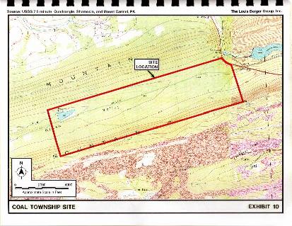

The following information details the BOP's proposal for obtaining the Trout Run portion of Brush Valley for a federal prison site.
If the BOP succeeds in obtaining this land, no land will be available for recreation or industry.
Description:
This property consists of approximately 1,800 acres of largely wooded and undeveloped land, located in Coal Township in the
souteast corner of Northumberland County. Of the available 1,800 acres, the Bureau is considering 900 acres for possible acquistion
and development. (U.S. Department of Justice/Federal Bureau of Prisons, Proposed Federal Correctional Facility Pennsylvania: Public
Scoping Meeting, May 31, 2000.) This site also includes Reservoir No. 4 which is approximately 9.5 acres.
|  |